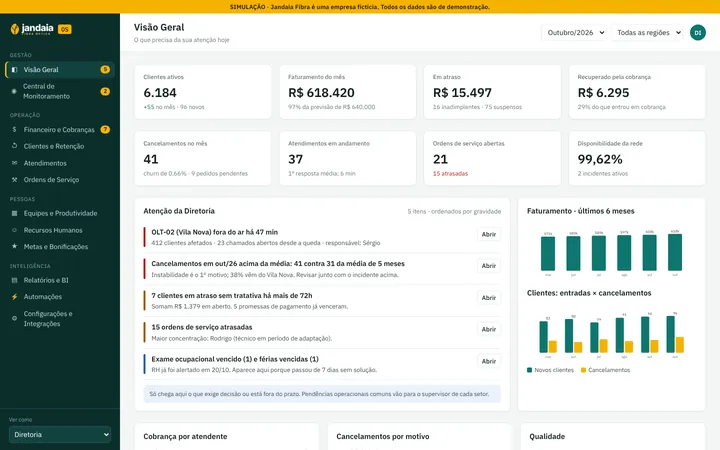
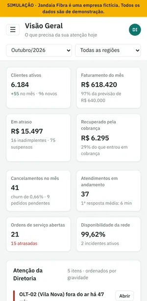
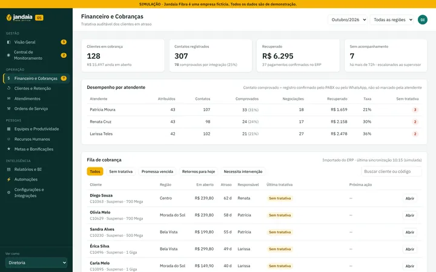
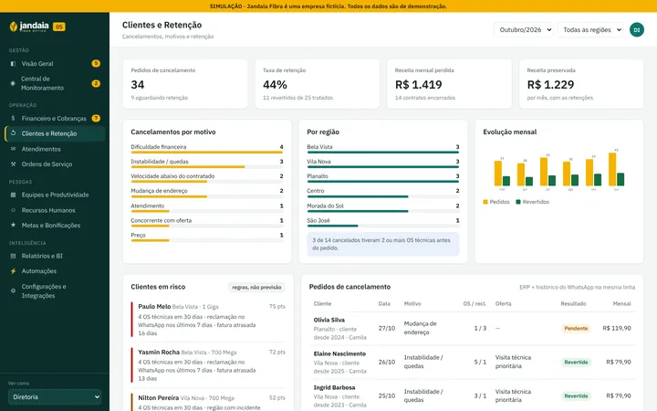
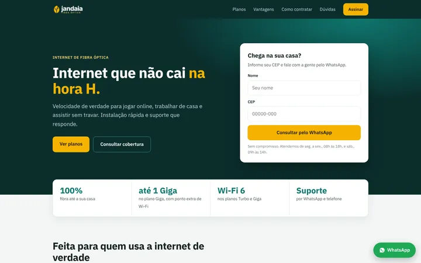

Gestão para provedores de internet
Administre o provedor de qualquer lugar, com números em que dá para confiar.
Cobrança com histórico, cancelamentos explicados, ordens de serviço, rede e equipe em um painel só. Fica por cima do ERP que você já usa (IXC, SGP, MK-Auth, Hubsoft…), sem trocar nada no primeiro dia.
Protótipo navegável com uma empresa fictícia, a Jandaia Fibra. Abra no computador ou no celular e veja pelos olhos da diretoria, da cobrança, do técnico e do RH.


- 12 áreasnavegáveis no protótipo
- 4 perfisdiretoria, cobrança, técnico e RH
- Sem trocar o ERPcomeça só lendo os dados
- App no celularinstala sem loja (PWA)
O que resolve
Os pontos que fazem a diretoria precisar estar lá.
Em provedores regionais, a informação fica espalhada entre o ERP, o WhatsApp, planilhas e a memória da equipe. O painel junta o que importa e mostra o que precisa de decisão.
-
Cobrança com rastro
Fila de clientes em atraso por atendente. Cada tentativa registra canal, resultado, horário e autor, e o histórico não se apaga.
-
Cancelamento explicado
Motivo, atendimentos, OS anteriores e oferta de retenção em uma ficha só, com indicadores por motivo e por região.
-
OS e rede no mesmo lugar
Ordens atrasadas aparecem para o supervisor antes de virar reclamação. Quedas de rede são cruzadas com os chamados que geraram.
-
Equipe com régua clara
Tarefas com responsável e prazo, produtividade por função e metas com aprovação da diretoria.
-
Só o crítico chega até você
A área Atenção da Diretoria mostra o que exige decisão ou passou do prazo. O operacional fica com cada setor.
Telas do protótipo
Veja antes de conversar.
Capturas do protótipo e da landing page de demonstração. Todos os números, planos e pessoas são fictícios.
Demonstração. A Jandaia Fibra não existe. O seu painel usa a sua marca e os dados do seu provedor.
Visão Geral
Os números do mês e a Atenção da Diretoria, ordenada por gravidade.

Financeiro e Cobranças
Fila por atendente, contatos comprovados e auditoria de cada tentativa.

Clientes e Retenção
Motivos de cancelamento, regiões, receita perdida e clientes em risco.

Landing page de vendas
Planos e consulta de cobertura por CEP que leva o cliente direto ao WhatsApp.
Teste você mesmo
Três peças para mostrar à diretoria.
Dica: no protótipo, abra Financeiro e Cobranças, registre uma tentativa em um cliente e veja o histórico e a auditoria. Fica salvo só no seu navegador.
Painel de gestão
12 áreas e 4 perfis. Use “Ver como”, no menu lateral, para trocar de perfil.
Abrir (abre em nova aba) Landing pageSite de vendas do provedor
Planos, vantagens e consulta de cobertura por CEP com envio ao WhatsApp.
Abrir (abre em nova aba) PropostaApresentação completa
Problemas, módulos, arquitetura, integrações, etapas de implantação e riscos.
Abrir (abre em nova aba)Como funciona
Em etapas, cada uma já entrega algo usável.
Prazos e valores dependem do tamanho da base e das integrações disponíveis, por isso são definidos depois do diagnóstico.
-
Conversa
Você conta como o provedor funciona hoje: ERP, WhatsApp, equipe e o que mais dá trabalho. Sem custo.
-
Diagnóstico e demonstração
Levantamos as integrações possíveis e mostramos o protótipo ajustado para o seu provedor.
-
Proposta
Escopo, etapas, prazo e investimento por escrito. Você decide antes de qualquer pagamento.
-
Implantação
Começamos pelo que mais pesa (em geral, cobrança e cancelamentos) e seguimos módulo a módulo.
Dúvidas frequentes
Antes de conversar
Não encontrou a sua dúvida? Pergunte no WhatsApp.
Preciso trocar o meu ERP?
Não. O painel fica por cima do ERP (IXC, SGP, MK-Auth, Hubsoft, Voalle e outros) e começa só lendo os dados. O ERP continua sendo usado como hoje.
Já funciona com o meu sistema?
Cada integração é confirmada com o fornecedor antes de ser construída, porque depende da API e do plano contratado. Quando não há integração, o módulo funciona com importação de planilha.
O que eu vejo na demonstração é um sistema pronto?
É um protótipo navegável, com dados fictícios salvos só no seu navegador. Ele mostra como o painel funciona. A versão do seu provedor é construída a partir dele, com os seus dados e a sua marca.
Quanto custa?
Depende do tamanho da base, dos módulos e das integrações. O valor sai na proposta, depois do diagnóstico, antes de qualquer pagamento.
E os dados dos meus clientes?
Cada perfil vê só o que precisa. CPF, endereço e salário ficam restritos a quem tem permissão, e todo acesso fica registrado.
A Jandaia Fibra é cliente de vocês?
Não. É uma empresa fictícia criada para a demonstração. Todos os números, planos e pessoas são inventados.
Veja como ficaria no seu provedor.
Me chame no WhatsApp, conte como o provedor funciona hoje e marque uma demonstração.
Conversar no WhatsApp